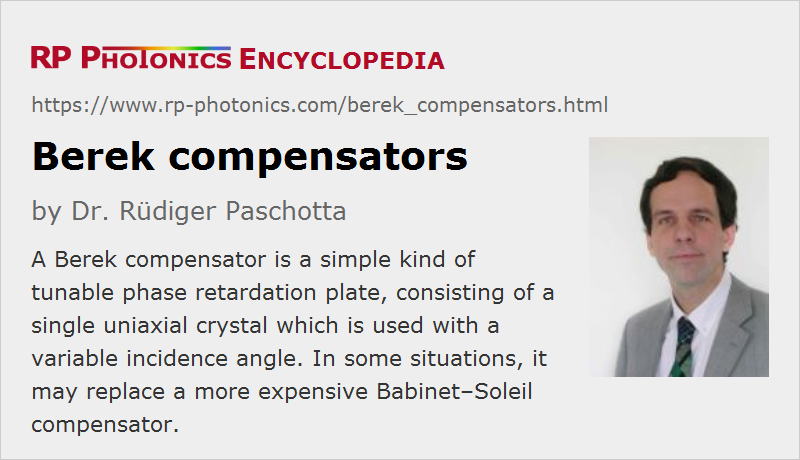

Berek Compensators
Definition: tunable phase retardation plates containing a single uniaxial crystal
Alternative terms: Berek waveplate, Berek tunable retarder
German: Berek-Kompensatoren
How to cite the article; suggest additional literature
Author: Dr. Rüdiger Paschotta
A Berek compensator (named after its inventor, the German physicist Max Berek) is a simple kind of tunable phase retardation plate. Alternative names are Berek waveplate and Berek tunable retarder.
A Berek compensator consists of a single uniaxial birefringent crystal, having its extraordinary optical axis perpendicular to the parallel faces. For normal incidence, there is no phase retardation, but a variable degree of retardance can be introduced by tilting the plate against the beam (see Figure 1). The obtained retardation is proportional to the square of the tilt angle. This arrangement acts as a tunable true zero-order waveplate – in contrast to a Babinet–Soleil compensator, which is only an effective zero-order waveplate.
The tilt angle can be controlled with some kind of rotating dial, for example; different mechanical arrangements have been developed. Ideally, the adjustment knob contains a precisely readable scale for determining the position, and one has a tuning curve which allows one to relate that position to the achieved retardance at different wavelengths.
Unfortunately, the tilting of the Berek plate also causes a variable beam offset, which however may be irrelevant in various situations. For minimizing the variable beam offset, one may use a material with high birefringence and small thickness.
Although the Berek compensator can be used in a wide range of wavelengths, note that there is some wavelength dependence of the obtained retardance.
The polished surfaces may be equipped with anti-reflection coatings in order to minimize reflection losses.
Applications of Berek Compensators
Berek compensators are used in various situations where tunable phase retardance is required and zero-order performance is desirable, mostly for working in a relatively wide wavelength range. An example is polarized light microscopy; Berek compensators are delivered together with some light microscopes.
Berek compensators can also often replace the more expensive Babinet–Soleil compensators if their variable beam offset can be tolerated. One may, for example, measure the retardance of optical components such as fixed waveplates.
Suppliers
The RP Photonics Buyer's Guide contains 3 suppliers for Berek compensators.
Questions and Comments from Users
Here you can submit questions and comments. As far as they get accepted by the author, they will appear above this paragraph together with the author’s answer. The author will decide on acceptance based on certain criteria. Essentially, the issue must be of sufficiently broad interest.
Please do not enter personal data here; we would otherwise delete it soon. (See also our privacy declaration.) If you wish to receive personal feedback or consultancy from the author, please contact him e.g. via e-mail.
By submitting the information, you give your consent to the potential publication of your inputs on our website according to our rules. (If you later retract your consent, we will delete those inputs.) As your inputs are first reviewed by the author, they may be published with some delay.
Bibliography
| [1] | D. A. Holmes, “Wave optics theory of rotary compensators”, J. Opt. Soc. Am. 54 (11), 1340 (1964), doi:10.1364/JOSA.54.001340 |
See also: Babinet–Soleil compensators, waveplates, birefringence, retardance, polarization of light
and other articles in the category photonic devices
|  |
If you like this page, please share the link with your friends and colleagues, e.g. via social media:
These sharing buttons are implemented in a privacy-friendly way!